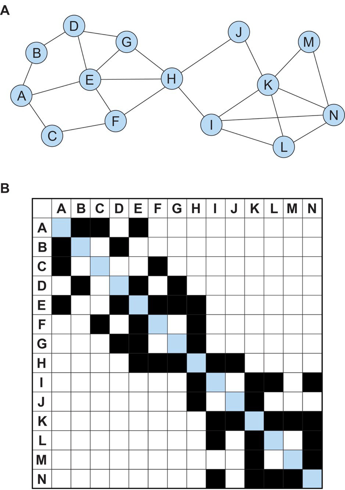
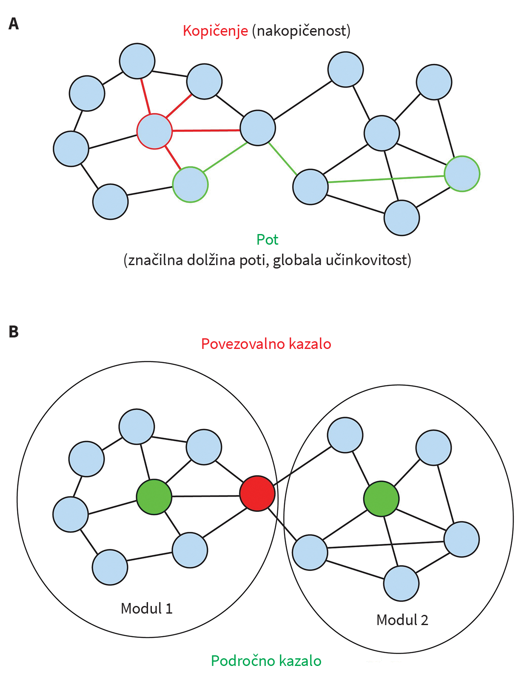
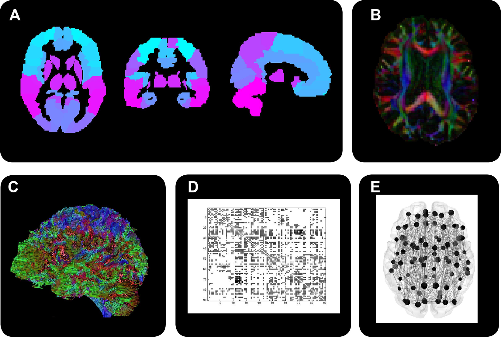

Structure and function of brain networks
Abstract
In recent years, the so-called network perspective has led to better understanding of the functioning of the brain in health and disease. The development of non-invasive imaging methods and the use of mathematical tools from graph theory allowed for investigating the structure and function of brain networks. Connections within structural networks can be reconstructed using diffusion magnetic resonance imaging, while functional imaging methods allow for investigating functional networks. The capabilities of the brain are based on network topology, which allows both functional segregation and integrative processing of information. This review represents an accessible introduction to the basic principles of graph theory and network neuroscience. We introduce measures of network topology and basic properties of human brain networks. We explain how neurological and psychiatric disorders affect the functioning of the brain as a network and illustrate the relevance of these findings for clinical practice. We also highlight some limitations of the network approach and future challenges to be addressed in this rapidly developing field of neuroscience.
1 Introduction
We can picture the multitude of connections between hundreds of billions of neurons in the human brain as a network that allows for the rapid and parallel processing of large amounts of complex and diverse data. The foundations for studying networks are mathematical methods that can be used to describe the characteristics of different systems of interconnected elements. Quantitative network analysis has long been established within social sciences, where it has contributed to understanding such diverse areas as the spreading of flu epidemics, resolving conflicts in societies, relationships and influences within the political and economic elite, and character relationships in Victor Hugo’s novels (1-5).
As scientist in life science we also followed that example and are trying to describe the functioning of complex biological systems, including the brain, through networks. Thus, the focus of research on the central nervous system has shifted from the search for circumscribed “centers” of individual activities to the study of brain networks. White matter connections represent the basis for the distributed patterns of brain activity. These guide our behavior and are altered in neurological and psychiatric disorders.
Slovenian researchers have also established themselves in the field of network studies. In addition to neuroscientists the tools are successfully utilized by IT and computer specialists (6) and researchers in other medical fields (7). Pajek (“Spider”), a widely recognized network visualization and analysis program, is the results of the Slovenian know-how (8). This paper aims to describe the basics of network neuroscience in order to highlight methods that have significantly transformed the study of the brain and are already knocking on the door of clinical use.
2 Graph theory and the characteristics of network architecture
At the beginning of the 18th century, the townspeople of the Prussian Königsberg (present-day Kaliningrad) entertained themselves with the riddle of seven bridges over the Pregel River. They tried to find a continuous path that would cross each bridge exactly once and lead back to the starting point. Leonhard Euler provided mathematical proof that no such path exists (9). He focused on the relative mutual position of the bridges and land, ignoring exact distances and geometric relationships. This is how he established the field of the “geometry of position”, known today as graph theory (10).
Topological relationships within a network or a graph are key to the use of graph theory, as opposed to geometric, geographical, or anatomical distances. A

Edges can be undirected (e.g. persons A and B sending letters to one another) or directed from a starting point to the destination (e.g. A sends letters to B). They can also be defined as binary (for example, the exchange of letters between A and B is ongoing or not) or they may be weighted (e.g. A and B have exchanged a certain number of letters). All four possible combinations of directional / undirectional and binary / weighted networks can contribute to the understanding of complex systems, including the brain (11).
A very common feature of complex real-world networks, which we often experience in our everyday life, is the “small world phenomenon”. In larger social communities, it is often possible to connect two individuals through a surprisingly small number of intermediate steps of acquaintances (12). The architecture of a small world is characteristic for a wide range of biological, technological and social networks, including the nervous system (13).
3 Measures of network topology
Using graph theory tools, we can describe various characteristics of network architecture. We use network measures to quantitatively evaluate the local environment of individual nodes and to evaluate the characteristics of the global network topology, while also assessing the role of each element within the network (Table 1).
|
Clustering coefficient |
The fraction of a node’s neighbours that are also neighbours of each other. It represents an estimate of the local environment of an individual node. |
|
Characteristic path length |
The average shortest path length between all pairs of nodes in the network. It provides a measure of the capacity for parallel information transfer and integrated processing. |
|
Global efficiency |
The average inverse shortest path length between all pairs of nodes in the network. It provides a measure of the capacity for parallel information transfer and integrated processing. A more robust measure compared to characteristic path length, as it is less susceptible to outliers and can be calculated for disconnected networks. |
|
Degree |
The degree of a node in a binary network is equal to the number of edges connected to that node. |
|
Strength |
The strength of a node in a weighted network is equal to the sum of the weights of edges connected to that node. |
3.1 Measures of network segregation
The neighborhood of an individual node is represented by adjacent elements in terms of topology, which does not necessarily correspond to close physical proximity. The measures of local segregation reflect the organization ofthe network into individual communities, which may also be called clusters or modules (11).

3.2 Measures of network integration
Measures of network integration evaluate the ability of a network to process information globally, i.e. to engage in interactions beyond the boundaries of individual modules (11). This group of measures is based on the concept of
The most commonly used measure of network integration is the measure of
High global efficiency means that all nodes in the network are relatively close, allowing for a more direct interaction between nodes and promoting a high degree of functional integration (13).
3.3 Measures of influence and centrality
In most real-world networks, individual nodes or edges differ in their impact on the overall functioning of the network. Nodes of high strategic value tend to be more densely connected to the rest of the network and thus facilitate global integration. Such nodes are called
Hubs can be defined using different sets of criteria. A commonly used measure of a node’s importance is its
In networks composed of individual modules, the contributions of individual nodes and hubs to the overall flow of information within the network differ (Figure 2b). Some high-degree nodes are strategically positioned to connect different modules. Such
4 Beyond the localized perception of brain function - a network perspective
In the past, there have been several major shifts between two fundamentally opposing perspectives on how we understand brain activity – the concepts of localization of function and of the continuum with distributed functions. A wealth of literature describing patients with localized brain damage and the first studies based on methods of functional brain imaging have formed the view that each brain function has its own anatomically defined center.
This simplistic view has been largely transformed by research findings over the past two decades. In order to gain a fuller understanding of the relationship between brain structure and function, network neuroscience relies on the concept of the brain as a complex network (5).
The brain can be viewed as a network across different spatial levels - from the microscopic level of individual neurons and synapses to distributed networks composed of macroscopically defined anatomical regions and larger neuronal systems. The definition of a node usually requires dividing the brain into individual structures or coherent areas - individual cells, different cortical and subcortical areas, etc.Connections/edges between nodes can be defined in different ways. We can differentiate types of connectivity accordingly.
Displays of structural networks of animal models’ nervous system, e.g. roundworm
5 Methods of constructing brain networks
Researchers are trying to get closer to displaying all the connections in the human brain using various techniques. The currently available methods do not yet allow for the determination of complete connectivity at the cellular level, but we can approach this objective in different ways.
The first means are invasive methods of injecting axon tracers into the animal’s brain, taking advantage of axonal transport to display nerve fibers (20). However, such invasive methods cannot be used in humans. Pathological sections may display connections, but examining the brains of deceased subjects has many limitations, including lack of possibility of correlation between structure and function.Non-invasive magnetic resonance imaging (MRI) techniques - at least for now - represent the best solution. MRI can exploit the signal of protons in water molecules to show structural characteristics of different brain, and indirectly, using specific sequences, we can also make assumptions regarding metabolic activity and function of the nervous system.
The basis for network construction is the division into individual elements – i.e. individual nodes. The cerebral cortex, as shown with MRI, is divided into individual elements that represent anatomically clearly defined areas or areas with a specific function. This can be done using anatomical atlases and automated techniques, which divide the cortex into individual defined anatomical regions, e.g. to individual gyri. A more recent alternative, however, is the ability to subdivide the cortex of each hemisphere into 180 diverse areas that are defined by variations in anatomy, cortical microarchitecture, function, and connectivity pattern (21). After defining nodes, the next step in building brain networks is defining connections/edges between the nodes.
In order to evaluate structural connectivity we need to reconstruct the anatomical connections, i.e. white matter tracts. This is possible using diffusion MRI, where the orientation of nerve fibers is inferred from the thermal motion of water molecules. In a single voxel we estimate the predominant direction of diffusion of water molecules and trace this apparent path to adjacent voxels. This reconstructs the three-dimensional layout of white matter tracts and identifies regions that they connect (22). Determining tract edges between nodes in the gray matter allows for the design of an adjacency matrix, which forms the basis for calculating measures of structuralnetwork topology (Figure 3).

To define functional connectivity, we use a similar thought process and related MRI data processing methods. A key difference, however, is the nature of the edges between the nodes, which do not represent anatomical connections between regions but reflect similar functional activity. Data on this can be obtained using functional MRI (fMRI) that takes advantage of the blood oxygen level–dependent (BOLD) changes in the magnetic susceptibility of tissue that depend on synaptic activity (23). Edges in functional networks are thus determined based on the correlation in activity between pairs of nodes in time.
6 The human connectome
The term connectome has been used to chart the connections found in the brain (24). Due to the publicity of the Human Connectome Project, the general public was also made aware. The researchers have set themselves the ambitious goal of mapping the human brain. This includes an accurate spatial representation of structures and activities accompanying certain phenomena. In order to achieve this objective, they are developing improved ways of capturing, analyzing, and displaying acquired data (25).One of the challenges is the aspiration to better define the composition of brain tissue based on the properties of the MRI signal. For example, the assessment of the presence of a magnetically susceptible substance (deoxyhemoglobin, hemosiderin, iron deposits) in tissue using susceptibility weighted imaging (SWI) can contribute to this, as well as measuring physical and biochemical properties of myelin by combining different MRI sequences, and obtaining a large amount of data on diffusion of water molecules using diffusion kurtosis imaging (DKI).
Although the graph theory approach is based on topological relationships between network elements, topological and anatomical distances in the human brain are known to be relatively related. Areas that lie in close anatomical proximity are more likely to be interconnected. In contrast, connections between distant regions are less likely (16). This architectural feature may reflect the need to minimize the amount of material required to form a network.
The high total length of all brain connections and the high metabolic activity of the brain mean that constructing the central nervous system is “expensive”, and so is the maintenance of its structure and function. Constantly adjusting for the activation of different neuronal populations requires extremely high computational performance. If the “cost” of setting up a system was to play a minimal role in the evolution of the central nervous system, it would not allow for an efficient exchange of information between remote areas. Thus, the structure of the brain network may be a compromise between the conflicting demands of cost reduction and increased efficiency (26).
One of the basic principles that makes the structure of the brain economical is small-world topology. The human brain demonstrates high clustering and short path lengths. Such architecture is an appropriate solution to the need for coordinated activity in the face of ever-changing needs.Structural networks allow the flow of information within distributed networks with two main goals: to promote efficient functional segregation within closely related modules, which enables functional specialization; and fostering global processing integration through the rapid exchange of information between remote areas.
Each module contains several densely interconnected nodes. Such structure provides the anatomical basis for the exchange of a large proportion of information processed by the nodes, such as visual signals in the visual cortex of the occipital lobe. Effective nervous system functioning also requires efficient integrative processing enabled by the connections between individual modules. To identify a visual stimulus, it is necessary to quickly and effectively transmit it to another module which lies in the temporal lobe.Unlike the dense interconnection of nodes within each module, the connections between different modules are less rarer. Such a constitution of the nervous system is a reflection of economy. If we take a look at air traffic, for example, it is evident that direct flights between all airports in the world are not possible. Air traffic can be organized as economically sustainable when passengers travel between smaller places with connecting flights at major airports that see a large proportion of the total air traffic. The dissemination of information across the brain network works similarly - only certain nodes are responsible for communication between modules, which have a larger number of connections that are usually longer. Such nodes, called hubs, are strategically particularly important elements of brain networks (16).
Network hubs allow for efficient segregation and integration of processing in the brain. They interconnect the individual modules and form the basic framework of the human connectome. Hubs are mostly found in the area of the parietal and anterior frontal lobes (16). They also include the precuneus, putamen, insula, and structures of the superior parietal and superior frontal cortex (27).
In addition to the dense connection of individual hubs with other elements within the same module, hubs in the human brain are also characterized by preferentially interconnecting with each other (28). In this way, short network paths are maintained. This aspect of the structural organization of the brain has been named as the presence of a “rich club” (29). The name is based on a parallel with social systems in which influential individuals often socialize or connect with each other. The rich club phenomenon is present when network hubs are more densely interconnected compared to connections with low degree nodes (30). The presence or absence of a rich club thus represents an important feature of a network topology.
Understanding the connectome allows us to better understand the functioning of the brain as a complex system of interconnected elements. By understanding the pattern of connections, we can better appreciate both the role of individual areas of the cerebral cortex and the functioning of the brain as a complex whole. At the same time, network neuroscience provides a framework for research focused on understanding, assessing, and predicting individual differences between healthy subjects and for researching brain disorders.
7 Networks and brain disorders
Symptoms of brain disorders can be related to structural as well as functional changes in brain networks. Several neurological disorders, including dementia, have a common characteristic of reduced ability to integrate across networks, which is associated to the damage of long association tracts. These are the main mediators of global efficiency. The pattern of changes in segregation of processing, which is more dependent on changes in the pattern of shorter connections, is less consistent across pathologies (31).
Neurological and psychiatric disorders can be conceptualized as disruptions to network economy. Brain hubs are expensive network elements - in terms of high metabolic rate, high blood flow, and great physical distances of their connections to other network elements (32-34). These features make the hubs particularly vulnerable to dysfunctions, and their failure has a disproportionately large impact on processing efficiency throughout the whole network. Thus, abnormalities in brain diseases are evident primarily in these expensive and vulnerable network elements.
Brain network hub dysfunction is the common factor of a wide variety of brain disorders. According to network topology, gray matter lesions are not randomly distributed, but preferentially accumulate in hubs in various diseases (35,36). A feature of hubs that may be important for maintaining cognitive abilities is the flexibility of their functional connectivity patterns, which facilitates adaptive task performance (37). The cognitive control system thus proves to be critical for maintaining mental health (38).
Redistribution of processing within the network as a result of dysfunction is one of the possible pathophysiological mechanisms of brain diseases. Single node failure causes the redistribution of processing to other higher degree nodes, which are higher up in the network hierarchy. These are most often hubs, which consequently become overloaded, leading to their degeneration (39).This, in turn, leads to a redistribution of processing from hubs to less central nodes within the distributed network that become more overloaded by changes in the flow of information. As a result, this leads to reduced efficiency of network processing and the gradual spread of a less favorable pattern of activity.These findings have led to the hypothesis that any brain disorder could lead to a similar pattern of re-routing the information flow within the brain. Hub overload and failure could, in this way, represent a common end mechanism in the deveopment of brain disorders (40).
The field of network neuroscience has given us a new perspective on understanding human brain function and the pathogenesis of brain diseases, as well as the tools to study them. At the same time, quantitative measures of network structure could prove important in the development of new diagnostic and therapeutic approaches.
8 Changes in functional connectivity in shizofrenia
Both a change in the understanding of the importance of integrated brain function and the ability to assess the functional connectivity of brain networks through relatively short resting-state fMRI have encouraged interest in connectivity studies in psychiatric disorders. Schizophrenia studies, for example, have shown significant changes in the interconnection of cognitive control networks, which are related to the efficiency of cognitive abilities in healthy and ill individuals, the severity of disorganization symptoms in patients and their siblings (41), and persist while performing cognitive tasks (42). With aging, patients with schizophrenia show a faster decline in both global and local efficiency of cognitive control networks (43).
Combining findings of functional connectivity, psychopharmacological studies, and computational modeling further enables the causal validation of brain pathology models, and enables linking molecular and cellular neurobiology with neuroimaging findings (44). Such studies, for example, show that the effect of ketamine, which forms the basis for the so-called ketamine model of schizophrenia, is most likely to affect cognition through a change in the balance between excitation and inhibition in the central nervous system (45), and its effects on functional connectivity are mainly comparable to changes in the early stages of schizophrenia (46).The pattern of functional connectivity disruption in patients is associated with the severity of symptoms (47), individual differences in symptoms (48), and predicts the transition to psychosis in at-risk individuals (49). Such insights open up a new understanding of psychiatric illnesses and the possibility of developing neurobiological markers for risk prediction, early diagnosis, and disease monitoring.
9 Dementia as network failure
Clinical observations and pathologic findings have suggested the importance of brain networks in cognitive decline for years prior to their study using graph theoretical tools. Case studies of stroke patients have shown that cognitive disordersbelong among the so-called disconnection syndromes - disturbances in the interactions among various brain regions (50). Relatively small subcortical lesions can cause severe amnesia even in cases where the gray matter remains intact (51). In addition, pathological studies of the progression of Alzheimer’s disease, the most common type of dementia, have shown the importance of white matter connections. Specifically, neurofibrillary tangles do not directly extend to adjacent areas, but the pathology gradually progresses alongwhite matter connections (52,53).
Clinical case studies have identified the hippocampus as the key structure for episodic memory (54). Memory disturbance is the most characteristic and often the first symptom or sign of Alzheimer’s disease. Structural MRI consistent with clinical presentation in patients with Alzheimer’s dementia most often reveals atrophy of medial temporal lobe structures (55). However, it should be emphasized that damage to the temporal lobes is only part of the structural changes visible using MRI.
More recent research has revealed that the structures of the extended hippocampal network, including the circuit of Papez, are crucial for memory formation (56). Memory is just one of the cognitive domains that are affected in Alzheimer’s disease, and others are also dependent on the activity in various brain regions, which depends on their connections. Thus, a decline in the decision–making ability and reduced ability to respond to complex challenges is associated with changes in activity in the so-called cognitive control network which includes areas of the frontal and temporal lobes (57). Patients’ brains “at rest” also exhibit altered metabolic activity in the so-called default-mode network (58). There is a change in the pattern of activity in brain regions that are particularly active in “resting” states, e.g. introspection, meditation, or not focusing on specific thoughts or activities. In contrast, the default-mode network is characterized by a low level of activity during goal-directed activities. At that time there is activity in other networks reflecting specific types of brain processes.
Brain regions considered to be a part of the default-mode network include the precuneus, posterior cingulate cortex, medial prefrontal lobe, and structures of the temporal lobe (59). It is in these regions that the process of pathological protein accumulation in Alzheimer’s disease begins (60). Similarly, patterns of cerebral cortex atrophy suggest that neurodegenerative diseases affect individual brain networks (34).
Although Alzheimer’s disease is mostly characterized by gray matter impairment, diffusion MRI can also detect changes in the structural integrity of the white matter (61,62). However, white matter microstructure is also altered in patients with mild cognitive impairment, a pre-dementia condition (63). In addition, there is a change in the topology of white matter connections. Structural networks in Alzheimer’s are characterized by a reduced ability of integrative processing that is associated with a rate of cognitive decline (64). Topological changes, however, are already present in patients with mild cognitive impairment. In this group of patients, episodic memory function is primarily dependant on temporall association pathways, while cognitive control depends on the topology of the connections throughout the whole brain network (65).
10 Transfer of network neuroscience findings into clinical practice
As presented in cases of schizophrenia and dementia, the so-called network perspective has recently contributed to a better understanding of the pathogenesis of brain diseases.
However, the transfer of network markers of disease processes into clinical use is a longer process requiring, among other things, validation of measures in different populations and environments and their standardization. Nevertheless, some recent research also paves the way for this method into clinical practice. Below are a few examples that illustrate the contribution of the network perspective to different stages of the clinical process.
10.1 Diagnosis
Using measures of network topology to help reach a diagnosis is met with some obstacles. Topology measures depend on the technical details of image acquisition and processing, which makes it impossible to directly compare values across institutions. This means that it would be difficult to properly identify the reference areas that define a normal structure or function. Besides the basic measures of the global network topology, which we introduced above in more detail, there is also a myriad of other measures, which presents a great challenge for clinical or diagnostic validation (66). An additional limitation is the unspecificity of network measures. The fact that changes in network topology represent a generic response to different types of impairment implies that different diseases affect global measures of network topology in similar ways. Thus, for example, different types of dementia have a similar effect on the global network topology, as they all reduce measures of network integration (67-70).
Nevertheless, measures of network topology can contribute to a diagnosis in cases where it is difficult to reach the diagnosis using only clinical information, when no other specific diagnostic markers are available or are difficult to obtain. For example, prolonged disorders of consciousness resulting from brain disorders or injuries present a complicated diagnostic dilemma.Clinically, it is sometimes difficult to differentiate between the vegetative state and the minimally conscious state of patients, but most often it is not possible to determine which patients in a minimally conscious state have a retained capacity for higher cognitive functions.
Analyses of structural and functional networks enable differentiating between these groups, which in turn affects patients’ prognosis and represents a key element in deciding about further treatment and rehabilitation procedures (71,72).
10.2 Disease prognosis
One of the great challenges of clinical neurology is predicting the prognosis in acutely ill patients at an early stage after the onset of symptoms, for example in patients after stroke. In some cases brain plasticity allows for a good recovery from a relatively large stroke, but on the contrary, small injury to a strategic area may result in a severe disability. Even in patients with seemingly similar impairments, there are significant differences in outcomes and recovery time.These differences can, at least in part, be explained in terms of brain networks. The cognitive and behavioral outcomes of focal brain injury (stroke, surgical or traumatic tissue damage) are more severe when network hubs are affected, for example, in frontal or temporal cortices (73).
On the other hand, making a prognosis is a thankless task also in patients with symptoms that may reflect age-related changes in cognitive ability or the early stages of a slowly progressing neurodegenerative disorder. Network measures can be an added value in preclinical stages of dementia, where structural alterations are subtle but diffuse, and are often undetectable using the classical qualitative neuroradiological assessment. Machine learning approaches that allow for the detection and differentiation between discrete changes in connectivity can set apart two groups of patients with mild cognitive impairment: those who will progress to Alzheimer’s dementia and those with a stable cognitive status (74).
Predicting the course of the disease presents a difficult challenge even in the case of a known diagnosis of disease neurodegenerative disorder. In patients with amyotrophic lateral sclerosis, the neurologist primarily relies on clinical data, such as the time from the onset of symptoms to diagnosis, or the body part first affected, in order to predict survival. More recent research has shown that prediction of survival can be more accurate when morphological changes in the brain and measures of structural connectivity are also considered alongside the patient’s clinical (75).
10.3 Monitoring disease progression
An ideal indicator of the rate of disease progression reflects the underlying pathophysiological process that causes the symptoms and which we seek to impact through treatment, but in turn is also associated with the severity of the symptoms. In the case of small vessel disease or vascular dementia, traditional MRI measures such as total volume of white matter hyperintensities or number of lacunes are most commonly used as indicators of disease severity.
Cognitive abilities have been found to be more related to the global efficiency of white matter structural networks than to other MRI measures. However, through statistical analysis of mediation, researchers have shown that the volume and number of white matter lesions affect cognition indirectly through changes in network topology (68). Network measures thus represent an ideal marker for the severity of the disease process in patients with small vessel disease. Researchers from other fields, including Alzheimer’s, have come to similar conclusions (76).
In certain cases, functional networks are a good predictor of the abilities of healthy subjects and the severity of clinical symptoms. For example, patterns of brain activity at rest predict the effectiveness of sustained attention in healthy adults. The use of the same method in children and adolescents with hyperkinetic disorder was a good predictor of the severity of clinical symptoms (77).
Network measures are promising indicators of disease progression and may in the future contribute to the individualization of clinical decision making, i.e. the so-called personalized medicine. However, for now, they are primarily research tools and require extensive validation before widespread clinical use. In the future, network-based measures could also monitor the effectiveness of causal therapy for some of currently incurable diseases.
10.4 Selecting a treatment method
Different sets of symptoms may hide behind the diagnosis of depression, and changes in the functioning of neurotransmitter systems, brain networks, and patient responses to treatment also vary. A recent study illustrates the clinical value of studying brain networks in patients with depression (78). Based on patterns of functional connectivity, the authors have relatively successfully differentiated patients from healthy individuals using machine learning approaches. Classification into distinct four patient subgroups further significantly predicted the success of treatment with transcranial magnetic stimulation. Similarly, the use of measures of functional connectivity may improve the prognosis of response to antidepressants (79). Such studies have so far been rare, but they are significant because they indicate the possibility of planning optimal treatment according to biological characteristics of an individual patient.
11 Conclusion
In recent years the tools of graph theory have reshaped our understanding of how the central nervous system works. In combination with modern research methods, especially MRI, they enable the quantification of brain structure and function.
Networks neuroscience has brought a fresh perspective on the pathogenesis of brain diseases. Measures of network topology are slowly making their way into some aspects of clinical practice. For the time being, the most promising option seems to be to use of network measures to predict the individual course of a disease, monitor longitudinal changes in brain structure and function, and to evaluate the effects of treatment. However, it should be emphasized that network neuroscience represents only one approach to the study of the function of the nervous system in healthy subjects and in patients. In future, combining different perspectives and methods may contribute to a better understanding of one of the greatest challenges of science and modern society, the functioning of the brain in health and disease.
12 Acknowledgement
The J7–6829 and J7–8275 projects and the P3–0338 programme are financed by the Slovenian Research Agency from the state budget.